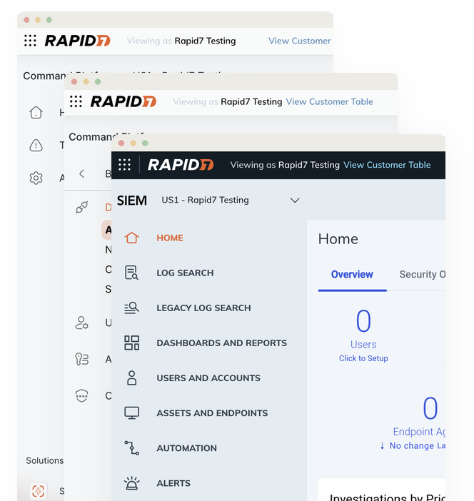
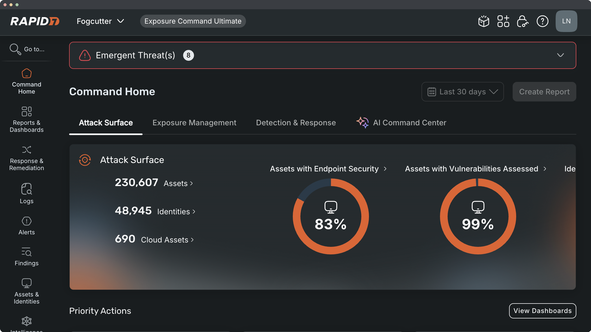
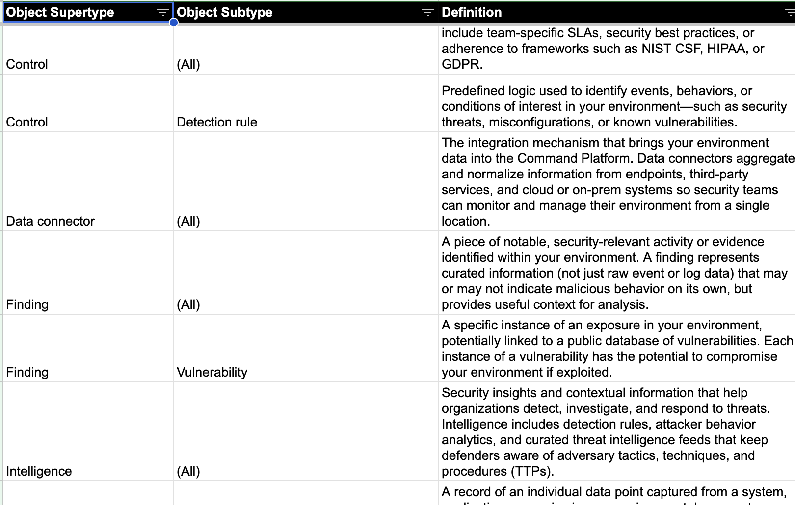

Rapid7 had grown by acquisition. An MDR leader recognized across exposure, detection, and response, Rapid7's executive team excelled at identifying market-leading technologies and bringing them into the company's portfolio, enabling differentiated value across all domains of cybersecurity.
As of 2025, Rapid7 offered 8 core products, both sold individually and packaged together for specific use cases. While each product's capabilities were strong, they didn't integrate together. Every product had its own UI design, its own navigation, its own way of storing and representing data. There was no larger platform play that brought it all together to tell the story of a customer's security environment.

This fragmented experience also offered little incentive for customers to expand their portfolio. As customers adopted additional Rapid7 products, the operational burden of using them grew. Organizations with access to the full suite would need to navigate more than 100 unique pages to fully do their jobs.
There was an upside, though. Customers felt strongly that Rapid7 had all the data needed to fully understand their security posture—moreso than other vendors—but the platform failed to put it all together. Rapid7 was sitting on the insight but failing to deliver it, because the product was organized around legacy technology, rather than how security practitioners actually think and work.
Bringing Rapid7's products into a single, unified platform experience was the clear path forward. But the implications were far-reaching.
It would mean more than a redesign—we would need to completely rethink how the platform presented itself to customers. Rather than existing as a collection of individual products, the platform would need to become the experience itself, with products serving as the underlying engines that powered it.
As Rapid7's content strategist and information architect, my role was to define the platform's navigation and taxonomy while coordinating research, prototyping, testing, documentation, and cross-functional strategy across Product and Engineering.
Our first navigation model was organized around the NIST Cybersecurity Framework, the most well-known standard in the industry. It made sense on paper—NIST CSF is an established mental model for security practitioners and offers a shared language. When we introduced the concept to customers in our Design Partner Program, the response was overwhelmingly positive. People recognized the framework and saw the clear step towards platform unification. The direction felt credible.
NIST CSF Navigation
Then we ran findability testing, including tree tests and a card sort. While customers said they found the NIST CSF model understandable, their behavior told a different story.
People frequently sorted cards into spots that didn't match the CSF structure we'd designed. The more sessions we conducted and the more we listened to people think out loud, it became obvious that the lifecycle-based structure created too much overlap between categories. Even though the user sentiment was positive, in practice the NIST CSF didn't translate to a usable navigation system.
So, we were back to the drawing board, but not starting from zero. Although the NIST CSF navigation had failed, the research revealed something interesting. While participants disagreed on where content belonged within the NIST structure, the language they used to describe security work was remarkably consistent. Across roles, products, and organizations, common concepts and vocabulary surfaced repeatedly.
We had uncovered the foundation for a taxonomy that reflected how practitioners actually thought about their work.
What we landed on instead was an object-oriented navigation model. Rather than asking which framework should organize the platform, we asked a simpler question: what are the actual things that our customers think and talk about every day?
We already had a solid body of research from vetting the NIST CSF navigation, but answering that question required a bit more. I partnered with Rapid7's internal InfoSec and SOC teams, and spoke with our sales engineers and support staff who routinely saw customers struggle with the existing experience. With help of UX Research, we also conducted sessions with about 225 customers through interviews, contextual inquiries, card sorts, and findability testing.
Across all of those conversations, the thing I paid the closest attention to was language. Not whether people liked a concept, but the words they reached for instinctively. I tracked vocabulary: what customers called things when they weren't trying to be precise, what internal experts called those same concepts, where those mental models aligned, and where they diverged. I then compared those findings against the language used across the industry and by our competitors, both to validate our direction and to identify places where Rapid7 could establish a distinct point of view.
The taxonomy led us to a new left-hand navigation with 12 primary items. To start, the 100+ pages customers previously had to navigate were organized within them, with future plans to consolidate these pages into single-click experiences. We shipped the first version of the nav in May 2025, while data and experience unification work continued to roll out product by product.

No matter how much research supported the new nav, we knew there would still be friction as users began to learn it. To manage that risk, we introduced something new for Rapid7: an opt-in toggle that allowed individual users to freely switch between the old and new navigation. I partnered closely with our CPO, VP of Product Management, and Director of UX to define the rollout strategy and make the case for the toggle as the safest way to transition 11,000+ customers without forcing them to relearn core workflows overnight.
Within six months, ~65% of users had chosen to retain the new navigation. That signal mattered: adoption wasn't driven by coercion, but by preference. Users were opting into something unfamiliar over something familiar, which validated not just the usability of the system, but the underlying model itself.
From there, we focused on what was still driving people back to the old experience. Throughout 2026, we addressed those gaps directly—moving to a micro-frontend architecture to reduce page load times, and adding in-navigation search to improve wayfinding and recovery when users did get lost.
Rapid7 had never operated from a shared data model before. Internally, there was little common language for thinking in terms of supertypes, subtypes, attributes, and relationships. At the same time, each product stored and structured data differently, which meant the taxonomy couldn't simply be diagrammed and handed off. It required both a translation layer that didn't exist yet and an organization capable of working in a new mental model.
In addition to defining the new navigation, my role was also to enable the org to convert our research-backed taxonomy into the platform's data infrastructure.
I started by writing Rapid7's first taxonomy document: a non-technical data model that defined every object, attribute, and relationship in plain language. I authored the definitions, informing the content with engineering and product input. That document became the spec engineering used to implement the technical translation schemas.

From there, I stayed involved in the implementation—reviewing schemas in Git for fidelity to the taxonomy and resolving edge cases where terminology or structure was contested. When disagreements required escalation, I led alignment conversations with product leadership, including our CPO.
To make the implementation real, I worked with a small group of engineers from across product teams—people whose primary work was elsewhere, but who had strong instincts for data modeling and a stake in getting unification right. Some had prior modeling experience, others were simply strong problem solvers with systems thinking skills. I facilitated a lightweight biweekly working session for us to unwind the hardest legacy data structures product by product.
The new navigation and taxonomy-based data infrastructure formed the foundation for transforming Rapid7's 100+ legacy pages into unified, single-click experiences.
As of today, three of these consolidated experiences are live, with additional work in active development. The new navigation is already available to all Rapid7 customers, and the legacy navigation—including the opt-out option—is scheduled to fully sunset later this year.
While additional work remains to fully unify both data and user experiences, early signals are strong. Customers have responded positively to what's been delivered so far, and we're seeing measurable reductions in task time and click depth across the platform.
More importantly, the unified model is helping customers. Security practitioners who use Rapid7 can now better understand their security posture, detect risky behavior earlier, and identify remediation opportunities that matter before attackers have the chance to exploit them.